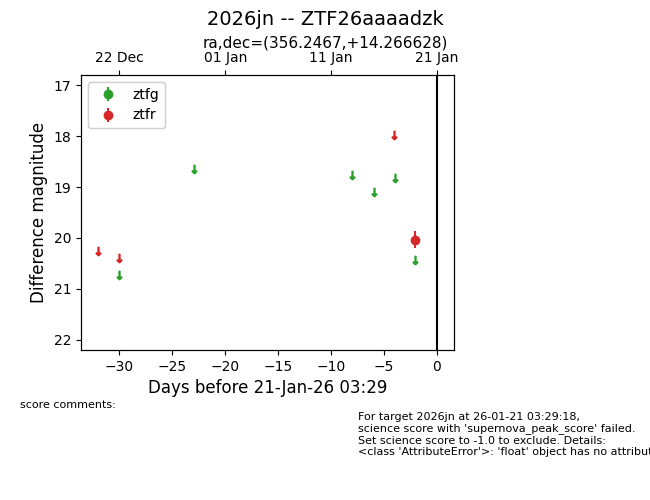
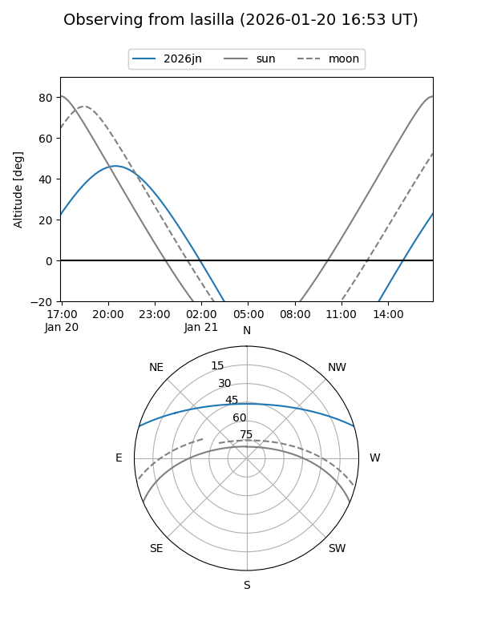
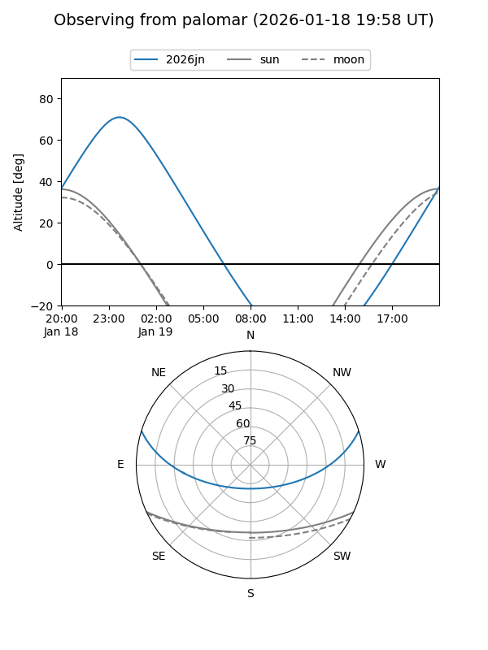

2026jn
Target 2026jn at 2026-01-19 03:30
Aliases and brokers:
FINK: link
Lasair: link
ALeRCE: link
TNS: link
YSE: link
alt names
ZTF26aaaadzk (ztf,fink_ztf)
2026jn (tns,yse)
Coordinates:
equatorial (ra, dec) = 356.2467,+14.26663
equatorial (HMS+DMS) = 23:44:59.20,+14:15:59.86
galactic (l, b) = (99.6129,-45.57494)
Flags:
Photometry:
last ztfr=20.04
1 ztfr detections
Lightcurve

Visibility


Additional plots